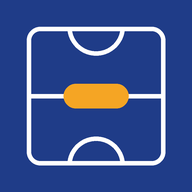

SpaBo Coach op je telefoon
De wissel-app voor de staf langs het veld. Zet hem op je beginscherm: dan opent hij als een gewone app en werkt hij ook zonder internet. Alles wat je invult, blijft op je eigen telefoon.
Open de app ›📱Op je iPhone
Gebruik Safari. Opende je deze link in WhatsApp of Mail? Kies dan eerst Open in Safari.
- Open de app in Safari.Ga naar ulfberth-nl.github.io/Coach
- Tik op ••• naast de adresbalk en dan op Deel.Op een oudere iPhone (iOS 18 of eerder) staat de deelknop meteen onderin.
- Scrol naar beneden en tik op Zet op beginscherm.
- Laat Open als webapp aan staan en tik op Voeg toe.
💡Open de app daarna altijd via het icoon op je beginscherm, niet via Safari. Alleen dan blijft je scherm aan tijdens de wedstrijd en voelt hij als een gewone app.
▶Op Android
Gebruik Chrome.
- Open de app in Chrome.Ga naar ulfberth-nl.github.io/Coach
- Tik rechtsboven op ⋮.
- Tik op Toevoegen aan startscherm of App installeren.
- Bevestig met Installeren.
⚙︎De eerste keer instellen
Een paar minuten werk, één keer per seizoen.
- Ga naar Team en vul de naam en de spelvorm in.Veld of zaal, aantal spelers, met of zonder keeper, de opstelling (bijv. 2-1-2) en hoeveel periodes van hoeveel minuten.
- Voeg je spelers toe bij Spelers.Kies eerst een pincode. Per speler: naam, een korte bijnaam voor op het veld, speelkracht, de rol waarin hij het sterkst is en de posities die hij graag speelt. Speelkracht en voorkeur zie je alleen achter de pincode.
- Kies een wisselprofiel bij Team.In balans is een goede start. Iedereen even lang, Rustig wisselen of Sterkste ploeg kan ook; de app stemt de regels per wedstrijd zelf af.
- Zet het programma klaar bij Seizoen met + Wedstrijd.Tegenstander, datum, tijd en veld. Hier verdeel je ook de taken voor ouders en maak je het bericht voor de groepsapp.
🏑Op de wedstrijddag
- Open de app: de eerstvolgende wedstrijd staat klaar.
- Tik op Spelers en meld aan wie er is.De app stelt een keeper voor (wie het minst keepte); tik Ander om een ander te kiezen.
- Kies hoe je wisselt.Autopilot: de app plant alle wissels en rekent mee als er iets verandert. Zelf plannen: je zet de startopstelling op het veld en plant de wissels per blok, op het veld of in de tabel.
- Tik Start bij de aftrap.Bovenin zie je steeds de volgende wissel. Schuif de ring naar links om te wisselen; de app piept en knippert als het tijd is.
- Tik op de stand voor een doelpunt. Na het laatste fluitsignaal sluit je de wedstrijd af.Speeltijd, posities en doelpunten komen vanzelf in het seizoensoverzicht.
✦Handig om te weten
- Vegen over het veld of de pijltjes bij de keeper laten zien wie er straks staat. Sleep een speler om het zelf te bepalen; de app zet er dan een speldje bij.
- Gaat het anders dan gepland? Wissel gewoon door te slepen. De app rekent de rest van de wedstrijd opnieuw uit.
- Zet het geluid van je telefoon aan voor de piep bij een wissel. Het scherm blijft vanzelf aan zolang de app open is.
- Maak af en toe een back-up bij Team → Gegevens. Je gegevens staan alleen op je telefoon; een back-up is je reservekopie.
- Kleuren in de app: voor, midden, achter, keeper.
- Laat het scherm met speelkracht niet zien aan ouders of spelers. De app is voor de staf.